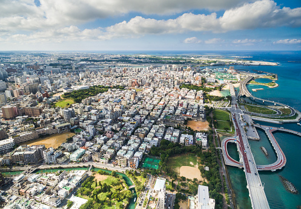

Naha
Naha est la capitale de la préfecture d’Okinawa, située sur la côte sud-ouest de Honto, l’île principale de l'archipel subtropical. Ville la plus peuplée de l’archipel d’Okinawa avec environ 320.000 habitants, elle sert de point d’entrée pour la majorité des visiteurs de la région et affiche une culture métissée liée à un riche passé historique.
Puisque la plupart des voyageurs à Okinawa arrivent par voie aérienne, il y a de fortes chances pour que Naha en offre son premier aperçu. Elle sert d'ailleurs parfaitement de point transitoire via trois moyens de transport principaux: l'avion qui dessert de nombreuses destinations alentours, jusqu'aux autres pays asiatiques, les nombreux bateaux et ferrys en direction des îles de l'archipel Ryukyu voire des quelques ports principaux du Japon, sur un plan plus local, les quinze stations du monorail Yui / Toshi qui, depuis 2003, file de l'aéroport à Shuri via Naha (seul réseau de train sur l'île et a fortiori dans l'archipel !).
Naha tient ce rôle de capitale depuis 1879, lors de l'annexion du royaume de Ryukyu au Japon, elle prit alors la place de Shuri, située à une poignée de kilomètres vers l'est.